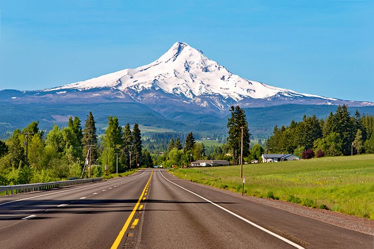

There is lots to do and see in Oregon, there are waterfalls all over the state, and the coast is just a few miles away. On top of all of that with Oregon being such a diverse place, there are all sorts of restaurants and life experiences that you can have in the city. Along with the mountains and nature walks the beautiful Columbia River is easily accessible and visible from the highway.


Nature Walks and Hikes


A Little Further Away
Just a few hours drive away from the main house, the Oregon coast is an incredible place to visit. The water may not be warm, but the vast amount of coast and landscape makes great family photos. There are all kinds of rock formations, pretty hikes, and fun small towns to visit. Did I also mention that there is vertually NO polution? This means that the air on the coast is always fresh and clean.